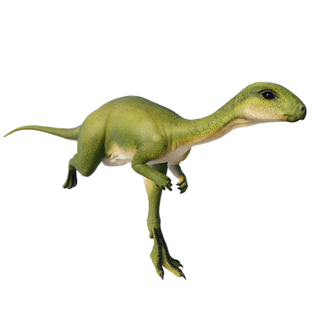

Useful Website
Dryosaurus is a genus of ornithopod dinosaur that lived during the Late Jurassic period, around 140-155m years ago. It weighs around 80-90kg and can reach up to 5m in length, with strong legs for running at speed and a stiff tail for retaining balance – both key attributes for escaping predators. Its name translates to ‘tree lizard’, in reference to its preference for forest areas.
